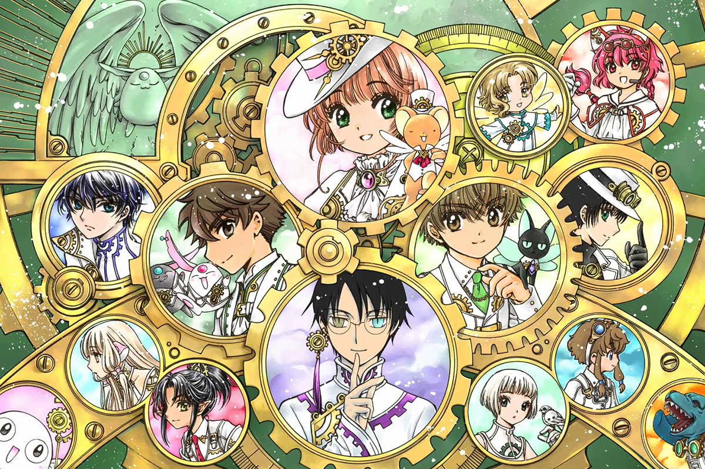
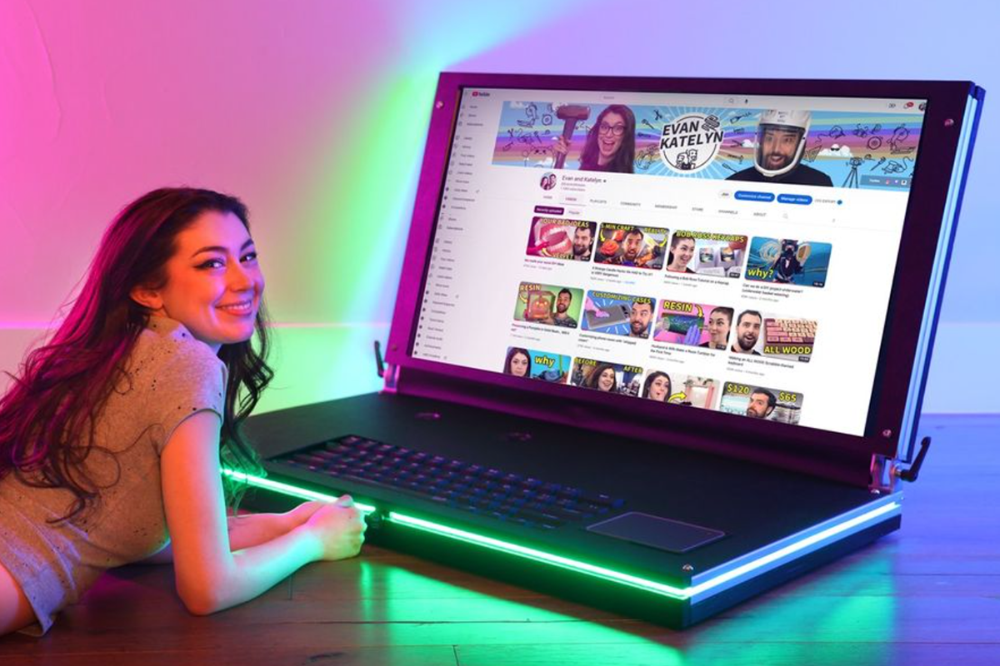
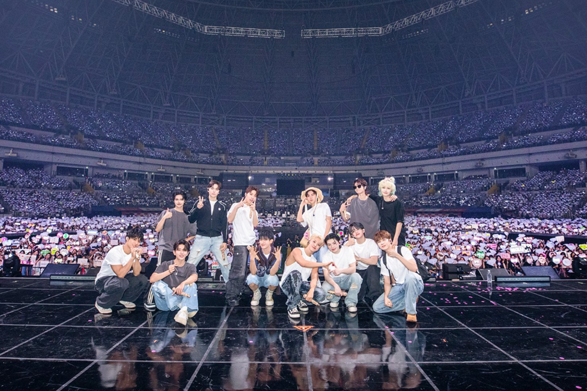

These are a few artists who inspire me:

Clamp is a mangaka group that covers a variety of themes in their work.
They often portray fantasy themes and reuses characters from their past works into new works.
Clamp is a childhood nostalgia for Maika that inspired her illustrations.
Maika also love their style and the creativeness to the different worlds that clamp has build up.

A couple on Youtube that loves to experimenting with crazy, out of the box ideas especially ones involving resin.
Their projects are very fun and inspirational that can make the audience go out and try ideas for themselves.
Evan and Katelyn's projects gave Maika an encouragement to try new crafts.

A k-pop boy group that consists of 13 members that formed in 2015 under Pledis Entertainment.
They famous for being self-producing and have very synchronized choreography. During the vast majority of high school,
Seventeen was very influential to Maika as they were her inspirations for most of her assignments.
They also brought her joy and relief during the harsh times of Covid.